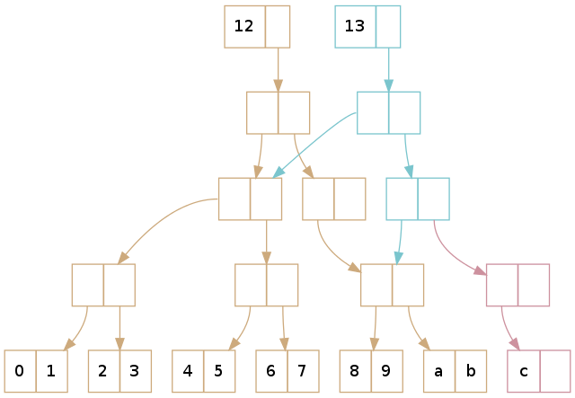

Clojure Hackathon
лямбды для всех
Dmitry Groshev @lambdadmitry
План
- общее вступление
- инфраструктурное
- Clojure в целом
- Clojure koans
- Обед
- …
- PROFIT
Общее вступление
- формат: хакатон+воркшоп
- первый день: лекции+практика
- большая задача
- команды
Инфраструктурное
Необходимое
- JVM (7+)
- leiningen (lein downgrade 2.4.2 ?)
- IDE по вкусу (vim, emacs, CursiveClojure)
Требуйте в своём редакторе
Структурное редактирование


rainbow delimeters!
Требуйте в своём редакторе
Структурное выделение
Требуйте в своём редакторе
Структурное удаление

Clojure в целом
Немного кода
(+ 1 2)
Базовые конструкции
:foo
nil
2.0
(list 1 2 3)
[1 2 3]
{:a 1, :b 2}
#{1 2 3}
- всё immutable
- деревья в основе (log32 n)
Деревья и immutable вектор
http://hypirion.com/musings/understanding-persistent-vector-pt-1
Больше сахара
(def pony {:name "Rainbow Dash"
:additional {:color "rainbow"
:friends ...}})
(pony :name) ; => "Rainbow Dash"
(:name pony) ; => "Rainbow Dash"
(map :name ponies) ; => (Name1 Name2 ...)
(get-in pony [:additional :friends]) ; => ...
Первоклассные функции
(def foobar +)
(def plus-two (partial + 2))
(def squared #(* % %))
(def some-fn (comp (partial + 2) (partial * 2)))
(def sum1 (+ 1 2 3 4 5))
(def sum2 (apply + some-list))
Лексическое замыкание
(defn my-function [x]
(let [x 2]
(prn x))
(prn x))
(my-function 1) ; => 2 1
Циклы, рекурсия
(map inc (for [q elements
p other-elements]
(+ q p)))
(loop [x 1]
(when (< x 10)
(prn x)
(recur (inc x))))
map/filter/reduce
нужно рассказывать?
seq
(list 1 2 3) ; => (1 2 3)
(map identity [1 2 3]) ; => (1 2 3)
(type (list 1 2 3))
; => clojure.lang.PersistentList
(type (map identity [1 2 3]))
; => clojure.lang.LazySeq
(take 5 (map #(* % %) (iterate inc 1)))
; => (1 4 9 16 25)
(into [] (take 5 (map #(* % %) (iterate inc 1))))
; => [1 4 9 16 25]
- seq — chunked ленивая последовательность
- все "list-related" функции работают с seq
- for тоже (используйте doseq)
- doseq/doall/dorun
FizzBuzz
(defn fizzbuzz [x]
(cond (zero? (mod x 15)) "FizzBuzz"
(zero? (mod x 5)) "Buzz"
(zero? (mod x 3)) "Fizz"
:else x))
(doseq [x (range 1 101)]
(prn (fizzbuzz x)))
Интерлюдия (коаны 1-8)
github.com/functional-koans/clojure-koans
ваш лучший друг: clojure.org/cheatsheet
Мультиметоды
(defmulti foobar (fn [x] (zero? (rem x 2))))
(defmethod foobar true [a] :foo)
(defmethod foobar false [a] :bar)
(defmethod foobar :default [a] :wat)
(foobar 4) ; => :foo
(foobar 5) ; => :bar
Destructuring
младший брат паттерн-матчинга
(let [[x y] [1 2]] (prn x y))
(fn [[x y & rest :as all]] ...)
STM
- локи, акторы и транзакции
- STM = Software Transactional Memory
- координированные изменения: ref+deref+dosync+alter+ref-set
- атомарные изменения: atom+swap!+set!
- подробнее в коанах
Интерлюдия (коаны 9-16, 20-21)
ваш лучший друг: clojure.org/cheatsheet
defrecord/defprotocol
- deftype: объект (нерасширяемый набор полей)
- defrecord: почти-map (заданные ключи — поля, дополнительные в map)
- defprotocol: расширяемый аналог интерфейсов
defrecord/defprotocol
(defprotocol Concatenatable
(cat [this other]))
(defrecord Pony [name]
Concatenatable
(cat [this other]
(.concat (:name this) (:name other))))
(cat (Pony. "Flutter") (Pony. "Shy"))
; => "FlutterShy"
NB: Java interop
defrecord/defprotocol
(extend-type String
Concatenatable
(cat [this other]
(.concat this other)))
(cat "Rainbow" "Dash")
; => "RainbowDash"
Почти финал (коаны 18-19)
ваш лучший друг: clojure.org/cheatsheet
Спасибо за внимание!
Слайды: si14.github.io/jb-clojure-hackaton-2014-slides
Твиттер: @lambdadmitry
Почта: lambdadmitry@gmail.com